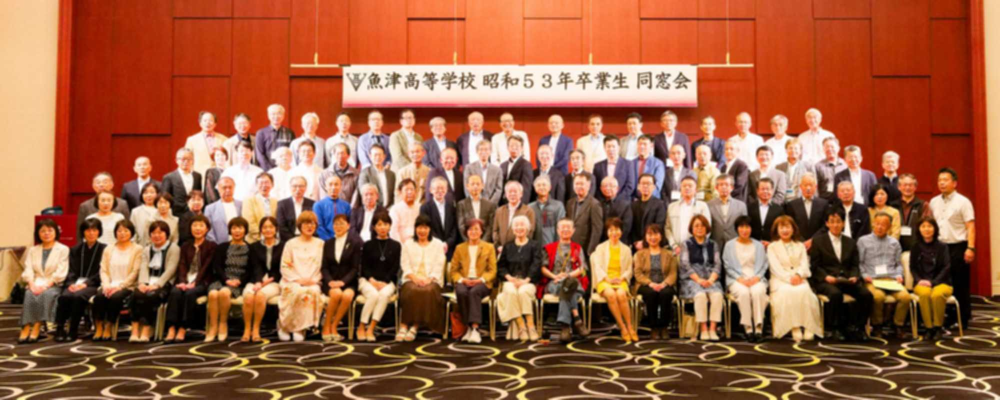

富山県立 魚津高等学校 昭和53年3月卒業生の同窓会
この同窓会は 昭和53年3月卒業の有志で運営しています。学校公式の「魚津高等学校同窓会」とは関係ありません。
私たちの学年の担任は卒業時、1組：高森、2組：柿沢、3組：桝田、4組：大野、5組：斉藤、6組：西田、学年主任：金尾 の各先生です。 私たちは、女優の室井滋さんの1学年 後輩に あたります。
LINEグループへの参加を お願いします
LINEグループ「魚津高校（昭和53年卒）同窓会」は、R7/6月時点で 約70名が参加しています。
雑談から ミニ同窓会、忘年会の案内など、楽しく運用されています。
連絡と情報交換のために、同窓生の皆さんの参加を お願いします。
参加方法
- 参加申し込みの為の LINEの公式アカウント「【公式】魚津高校（昭和53年卒）」を、友だち追加してください。
- 下のQRコードを カメラアプリ や バーコードリーダー で読み取ってください（LINEアプリでは読み取りにくい場合があります）。
LINEアプリが開きますので、「追加」ボタンを押して登録完了です。

- 公式アカウントを 友だち追加すると、自動応答でメッセージが届きます。
- 自動応答で届いたメッセージのトーク画面に、「クラス名」と「お名前」を返信してください。
- 数日以内に、クラスの担当者から「友だち追加」の案内がありますから、担当者と「友だち」になって、指示してもらってください。
- 同窓生 全員を対象とした LINEグループ の他に、クラス毎の LINEグループ も あると思いますので、各クラスの担当者に案内してもらってください。
- LINEグループ に参加されましたら、LINE に ニックネームで登録している人は 他のメンバーからは誰か分からないので、必ず「〇組の 〇山〇郎です」と、クラスとフルネームの投稿を お願いします。
クラスの担当者から連絡が無い場合は、末記 3組 水島 まで連絡してください。
同窓会（パーティー）は無事 終了しました
当日は89名の参加でした。ご協力、ありがとうございました。

- 開催日：令和7年5月31日（土曜日）
- 会場：ホテル「グラン ミラージュ」（魚津市役所の南側）
スケジュール
- 学校訪問＝12:00 魚津高校 正門玄関に集合
- ホテル 受付開始＝13:15
- 記念撮影＝13:45 参加者全員の集合写真を予定
- 同窓会（パーティー）＝14:00 ～ 16:30
- 二次会＝17:00 ～ 19:00 ＠まねきねこ魚津店（サンプラザの西側）
写真や動画のデータを提供してください
同窓会当日の写真や動画は、LINEの「アルバム」機能（LINEグループ参加者が閲覧可能）を使って、撮影者が それぞれアップロードしています。
当日撮影した写真や動画のデータを提供してください。 また参加者に限らず、過去のデータがあれば提供を お願いします。 提供していただいたデータは、ある程度選別して、今回 新たにデジタル化補正した卒業アルバム等と共に配布を検討しています（公開はしません）。 詳細は、末記 3組 水島 まで連絡してください。
写真や動画で、個人的に「映りたくない、見られたくない」という場合は、末記 3組 水島 まで お知らせください。 可能な限り自然な形で対応します。
データのアップロード
Dropbox を利用した データのアップロードは、受付を終了しました。
テータの提供は、末記 3組 水島 まで連絡してください。